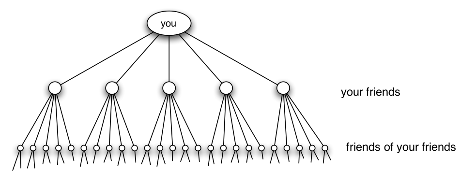
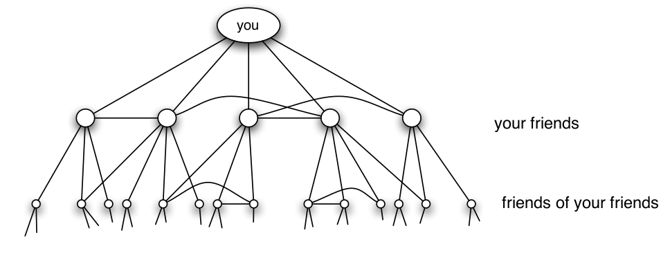
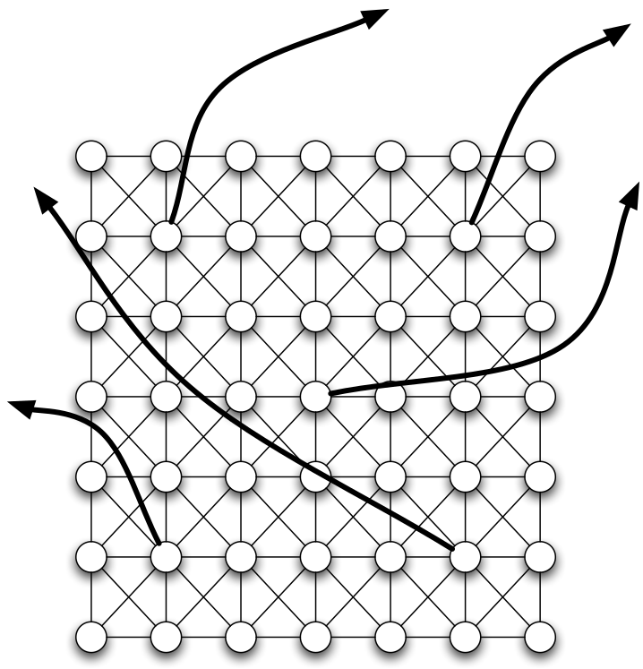
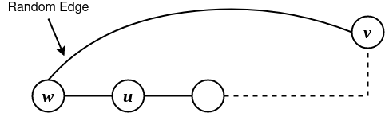

AR - Lesson 06
Indice
1 Fenomeno Small World
1.1 Six Degrees of Separation
Consideriamo l'esperimento dello psicologo statunitense Stanley Milgram (1967). In tale esperimento Milgram scelse una persona target che risedeva dalla parte opposta degli Stati Uniti. Dopodiché inviò una serie di lettere ad un gruppo di persone con le seguenti informazioni e regole:
- nella lettera era specificato nome, indirizzo, occupazione e altre informazioni riguardo il target
- chi riceveva questa lettera doveva inoltrarla (ovvero inviare una sola copia) ad un'altra persona, che secondo lui si avvicinava di più al target. Era possibile inviare la lettera ad una persona solo se la si conosceva di prima persona.
Al termine dell'esperimento Milgram osservò che circa un terzo delle lettere riuscirono ad arrivare al target, ma ancor più interessante
che tutte arrivarono mediamente in 6 passi.
Questo esperimento suggerì due proprietà importanti delle reti sociali:
- un'abbondanza di cammini brevi tra gli individui della rete, noto come fenomeno Small World (o "Six Degrees of Separation").
- tali cammini potevano facilmente essere individuati dagli individui, che altro non conoscono della struttura della rete se non il loro vicinato ed una euristica che gli consenta di intuire i vicini più plausibili per i cammini. Questo è noto come fenomeno della navigabilità.
Certamente un aiuto molto rilevante per la navigabilità è stata la presenza di alcune informazioni riguardo il target nella lettera (apparte il nome).
Per esempio se so che il target abita in un certa regione cercherò come prima cosa di inoltrare la lettera a una persona che geograficamente si avvicina.
Ancora, se so è abbastanza vicino a me e so anche che è un medico, certamente cercherò tra le mie conoscenze una persona che lavora (o che ha a che fare)
con l'ambiente sanitario (è meno probabile che mi avvicini se inoltro la lettera a un contadino).
Invece, se avessi avuto solamente il nome del target senza essere in grado nemmeno di individuare la sua città, molto probabilmente la lettera sarebbe stata
perduta.
Per quanto riguarda l'abbondanza di cammini brevi invece una possibile motivazione intuitiva è la seguente: supponiamo di avere conoscere in maniera diretta 100 persone, e che tali persone conoscono direttamente altre 100 persone. Allora con due "hop" posso raggiungere \(100 \cdot 100 = 10000\) altre persone. E se a loro volta gli amici dei miei amici conoscono 100 perso, in tre "hop" potrò raggiungere altri \(100 \cdot 100 \cdot 100 = 1000000\) persone, e così via…

Figura 1: Crescita puramente esponeziale delle conoscenze.
Purtroppo però questo ragionamento è inconsistente, in quanto si fa un'assunzione molto forte, ovvero che ogni proprio amico conosce altre 100 persone distinte. In un conteso reale è però poco plausibile questa proprietà: se sono amico stretto di due persone è motlo probabile che prima o poi essi si conoscano e diventino a loro volta conoscenti. Per esempio le reti di conoscenze dei social networks mostrano la presenza di una quantità elevata di triangoli tra gli individui, a conferma di quanto osservato. La caratteristica di una rete di avere molti triangoli è detta chiusura triadica (triadic closure), la quale diminuisce di molto il numero di individui raggiungibili con percorsi brevi rispetto al modello con crescita esponenziale.

Figura 2: La chiusura triadica diminuisce di molto il numero di persone raggiungibili con percorsi brevi.
1.2 The Watts-Strogatz model
Nel 1998 Duncan Watts and Steve Strogatz proposero un modello generativo di grafi aleatori che soddisfano due proprietà precedentemente viste: la presenza
di numerosi triangoli e la presenza di cammini brevi che collegano le entità della rete.
Il grafo generato in accordo col modello Watts-Strogatz è composto da due componenti:
- una componente deterministica che consiste in una griglia bidimensionale
- una componente aleatoria sovrastante
La griglia bidimensionale è un sottoinsieme di \(\mathbb{N}^2\), i cui punti sono i nodi del grafo.
Nella griglia ogni nodo ha un acro con i suoi vicini posti a destra, sinistra, sopra, sotto e in diagonale.
Più formalmente, fissato un \(n \in \mathbb{N}\):
\[
V \equiv \lbrace (i,j) \in \mathbb{N}^2 | 0 \leq i < n \land 0 \leq j < n \rbrace\\
E_1 \equiv \lbrace \lbrace (i,j), (a,b) \rbrace \in V^2 | \left[ a \equiv_n i+\alpha \land b \equiv_n j+\beta \right] \; \forall \alpha,\beta = -1, 0, 1 \rbrace
\]
Se si fa attenzione alla definizione di \(E_1\) (ovvero l'insieme degli archi della componente deterministica), si può vedere che la griglia ha una sorta di periodicità,
ovvero i nodi a un bordo della griglia sono collegati ai nodi sul bordo opposto.
In questa maniera otteniamo un primo grafo con un'alta quantità di triangoli (prima proprietà desiderata).
Per costruire la componente aleatoria fissiamo un \(k>1\), e per ogni nodo \(v \in V\) esso aggiungerà come ulteriori vicini altri \(k\) nodi scelti uniformemente a caso.

Figura 3: Costruzione modello Watts-Strogatz
Si può osservare una certa dicotomia tra gli archi deterministici e quelli aleatori:
- gli archi deterministici rappresentano un legame forte tra i nodi (strong tie), infatti tra due nodi legati da un arco deterministico esistono sempre dei triagoli.
- gli archi aleatori rappresentano invece delle conoscenze "alla lontana", e in quanto tale un legame debole (weak tie). Infatti è molto poco probabile trovare triangoli nella componente
aleatoria (a meno che \(k\) non sia molto grande).
A questo punto è doveroso chiedersi se effetivamente esistono cammini brevi tra i nodi della rete.
Intuitivamente parlando, se si considerano cammini composti dai soli archi aleatori, è poco probabile incontrare due volte uno stesso nodo in brevi distanze.
Perciò, nella compononete aleatoria la crescita dei nuovi nodi vicini è più simile al modello con crescita esponenziale (vedi Img. 1).
Successivamente Bollobàs & Ching diedero una dimostrazione formale a questo fenomeno. Più precisamente dimostrarono la presenza di cammini brevi in un modello
con molta meno randomness.
Consideriamo un nuovo modello simile a quello Watts-Strogatz, dove però solo un nodo su \(k\) ha archi random, e il numero di archi random è pari a 1.
Partizioniamo poi la rete in "città" di \(k \times k\) individui, e consideriamo il fenomeno small-world a livello di città.
Certamente ogni città avrà mediamente \(k\) archi random, e inoltre ogni coppia di nodi \(u,v\) di una stessa città sarà connessa da un cammino breve di lunghezza al più \(2k\).
Venne dimostrato che per trovare un cammino relativamente corto tra due nodi \(u,v\) di due città differenti, basta che
\(u\) raggiunga un nodo \(w\) nella stessa città (in al più \(2k\)) passi, e poi tramite pochi salti passare da dua città all'altra
fino ad arrivare alla città di \(v\).
In conclusione, anche con un piccolo ammontare di casualità, il modello Watts-Strogatz cattura il fenomeno di "mondo piccolo".
1.2.1 Navigabilità del modello Watts-Strogatz
Assodato che nel modello Watts-Strogatz esistono cammini relativamente corti tra i nodi della rete, quello che ci si chiede
è se tali cammini corti sono facilmente rintracciabili dai nodi, che conoscono solamente il loro vicinato e non la struttura dell'intera rete.
Supponiamo che un nodo \(u\) deve mandare un messaggio a un nodo \(v\) del quale conosce solamente le sue coordinate sulla griglia geometrica.7
Il nodo \(u\) potrebbe mandare in broadcast il messaggio a tutti i suoi vicini (che sono 8 o 9), e chiedere a loro di inviare
il messaggio a tutti i loro vicini.
Questo metodo è noto come Flooding dei messaggi, ed è il metodo più veloce per raggiungere il nodo \(v\) (in quanto equivale
ad una visita in ampiezza).
Il problema è che dopo \(h\) salti, ci sarebbero circa \(8^h\) messaggi in circolazione, oltre al fatto che sarebbe scortese
chiedere di inviare 8 messaggi ai propri vicini.
Vorremmo un modo per trovare un cammino non troppo lungo tra \(u\) e \(v\) in modo da trasmettere una sola copia del messaggio,
e non un numero esponenziale, un po' come fecero le persone che parteciparono all'esperimento di Milgram.
Purtroppo fare questo tipo di ricerca miope1 in un modello Watts-Strogatz non è possibile. Per esempio il nodo \(u\) potrebbe pensare di mandare il messaggio al suo vicino che più si avvicina alla destinazione \(v\). Questo però potrebbe non essere il modo miglio per raggiongere \(v\). Per esempio potrebbe esistere un nodo \(w\) vicino di \(u\) che si allontana di 1 rispetto a \(v\) nella griglia deterministica, ma che però è direttamente collegato a \(v\) tramite la componente aleatoria.

Figura 4: Controesempio appena descritto
Purtroppo però \(u\) non può in alcun modo sapere che conviene inviare il messagio a \(w\), in quanto conosce solo il suo vicinato e non quello di \(w\).
Inoltre è stato anche dimostrato2 con questo tipo di ricerca (nota come ricerca decentralizzata), non solo non c'è
nessuna garanzia di trovare un cammino corto, ma mediamente i cammini trovati sono molto più lunghi dei cammini minimi che
esistono tra mittente e destinatario.
Sostanzialmente il problema è che gli archi random della componente aleatoria sono "troppo" casuali per dare un supporto alla ricerca decentralizzata. Infatti in un contesto sociale reale, è molto poco probabile che due persone totalmente a caso entrino in contatto. È invece più probabile avere archi casuali tra persone più vicine fisicamente, anziché tra persone molto lontane.
Quindi possiamo dire che questo modello non è navigabile, e quindi non rispecchia le caratteristiche volute.
1.3 Un modello per la ricerca decentralizzata
Vogliamo quindi definire un modello di generazione di reti sociali che in qualche modo consenta una ricerca decentralizzata
di caminni che non siano troppo più lunghi dei cammini minimi.
Basandoci sull'osservazione precedentemente fatta che è poco probabile avere archi random totalmente a caso, possiamo
definire un modello che aggiunge un parametro che controlla il range di copertura degli archi random3.
Più formalmente siano due nodi \(u,v\) con distanza \(d(u,v)\) nella griglia deterministica sottostante, e sia una costante \(c \geq 0\) detta esponente di clustering. Perciò la probabilità che nella componente aleatoria esista l'arco \((u,v)\) è proporzionale alla quantità \(d(u,v)^{-q}\). Il fattore di proporzionalità è invece pari alla quantità \(Z_u\), definita come \[ Z_u = \sum_{v \in V \setminus \lbrace v \rbrace} \frac{1}{d(u,v)^q} \]
Perciò dati due nodi \(u,v\), l'esistenza di arco random tra \(u\) e \(v\) è guidata da \[ \mathcal{P}( (u,v) \in E_2 ) = \frac{1}{Z_u} \cdot \frac{1}{d(u,v)^q} \] dove chiamiamo per comodità \(E_2\) l'insieme di archi random.
[da finire]